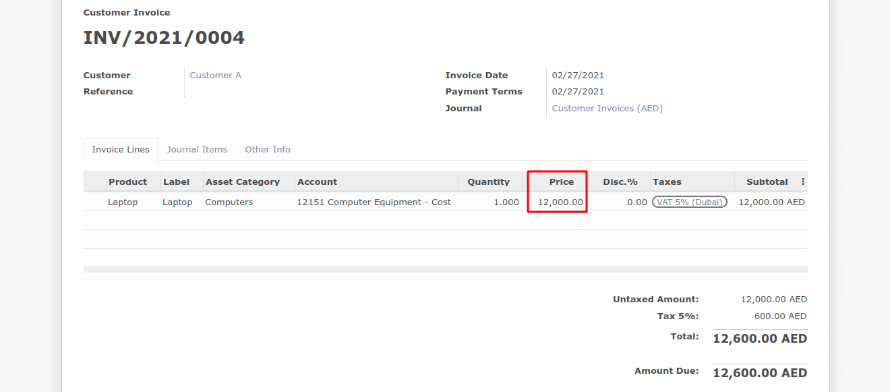
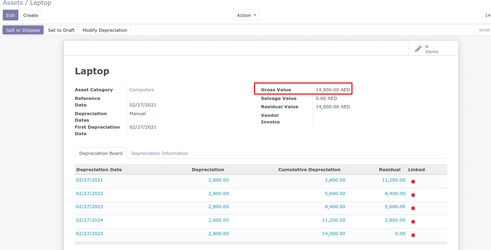
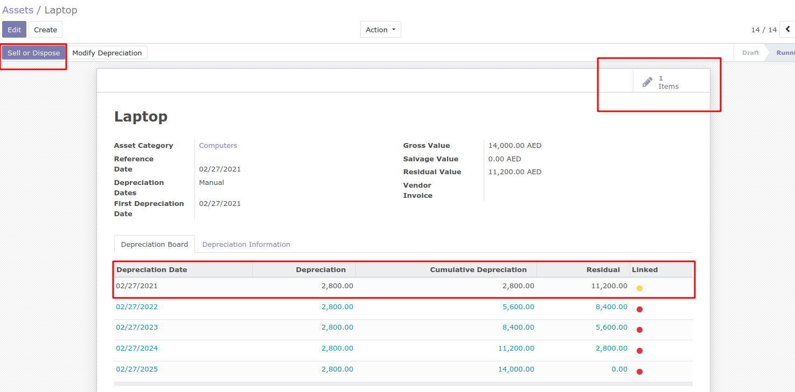
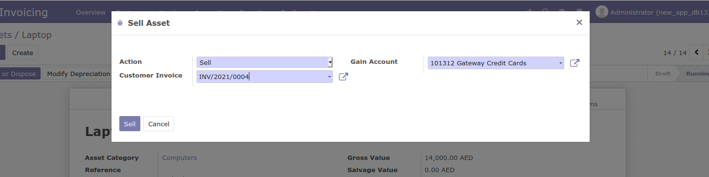
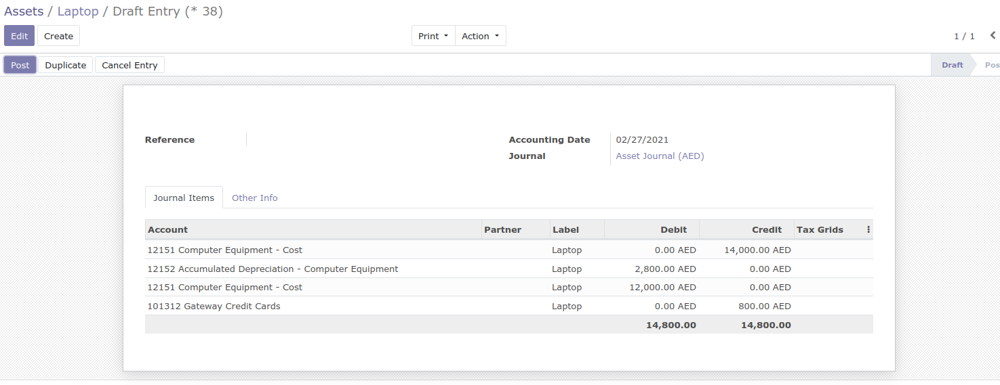
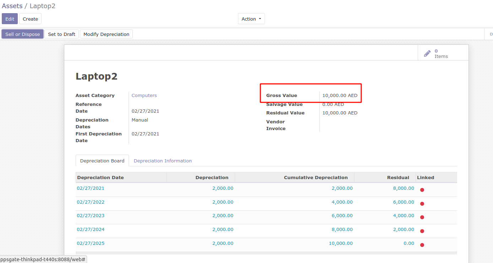
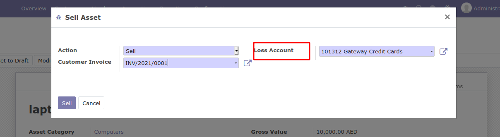
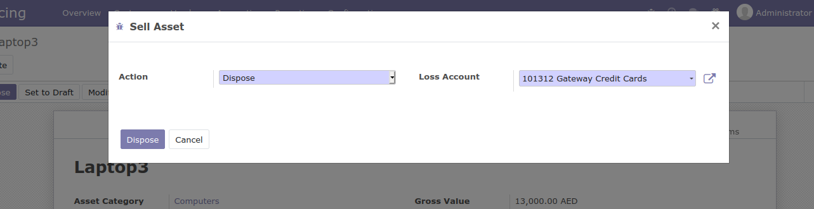
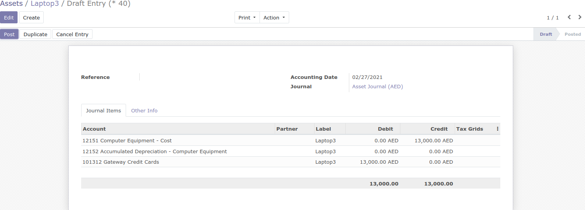

How to use this module

Here we can see an invoice, for the product Laptop with asset category Computers.
The Price for this particular asset is 12000. Which means we had bought this asset for 12000.

Now, under the accounting menu, in assets an asset for Laptop is created and in the gross value
the price is 14000. Which means we are planning to sell it at price 14000.

From the depreciation lines, we can post manually , now since, first depreciation line is posted one journal
entry gets created. By clicking on sell or dispose we can choose option to sell or dispose the asset.

Here, in the action we can choose sell and the related invoice for the particular asset. Now automatically the Gain Account
is shown, this is because the value in our invoice is 12000 and the gross value is 14000. Since, we are selling for more price
than purchased, it will be posted in the Gain account.

After we click on sell, the journal entries is created and the difference amount between sell and
purchase value is recorded in the gain account.
After posting the entries, it will change the state to close and 2 journal entries are generated, one which we posted manually
and automatically created entry after selling.

Now in the second case if we provide the Gross Value as 10000 which less than the purchase price.
From the depreciation lines, we can post manually , now since, first depreciation line is posted one journal
entry gets created. By clicking on sell or dispose we can choose option to sell or dispose the asset.

Here, it will go to the Loss Account and the difference will be recorded in the Loss Account.

Apart, from selling we can also dispose the asset which is no longer required. From action you
can select dispose to dispose the asset.

After selecting dispose , the amount will be recorded in the loss account automatically.
 After posting the entries, it will change the state to close and 2 journal entries are generated, one which we posted manually
and automatically created entry after selling.
After posting the entries, it will change the state to close and 2 journal entries are generated, one which we posted manually
and automatically created entry after selling.